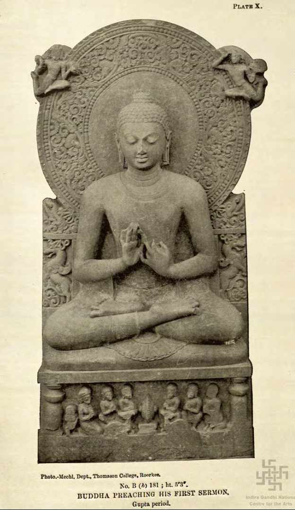

4. Religious Movements Buddhism & Jainism (600 BC – 400 BC) Heterodox Revolt • Age of Reason
The 6th Century BC witnessed a profound intellectual and spiritual ferment in the middle Ganga valley against Vedic animal sacrifices, Brahminical supremacy, and rigid caste orthodoxy. Led by Kshatriya spiritual teachers, Gautama Buddha and Vardhamana Mahavira pioneered paths of moral righteousness, non-violence (*Ahimsa*), and mental liberation.
1. Agrarian Need for Cattle: Settled iron-plough agriculture required bullocks; Brahminical cattle sacrifices (*Gomedha*) severely damaged the peasant economy.
2. Rise of Merchant Class (Vaishyas): Wealthy *Setthis* desired social respect commensurate with their wealth, which orthodox Brahmanism denied them.
3. Common Tongue: Buddha and Mahavira preached in vernacular languages (*Pali* and *Prakrit*) rather than complex Sanskrit.

Discovered at Sarnath; depicts Buddha delivering his maiden discourse to 5 ascetic companions.
Buddhism: Life, Four Noble Truths & Five Symbols
Avoiding both extreme asceticism and sensual indulgence.
Lotus & Bull
Lumbini (563 BC)
Horse (*Kanthaka*)
Mahabhinishkramana (Age 29)
Bodhi Tree
Bodh Gaya (Age 35)
Wheel (*Chakra*)
Dharmachakra (Sarnath)
Stupa
Mahaparinirvana (Kusinara 483 BC)
Four Noble Truths (Arya Satyani)
- 1. Dukkha (Life is sorrowful): The world is full of suffering (*Sabbam Dukkham*).
- 2. Samudaya (Cause of sorrow): Desire (*Trishna*) is the root of all suffering.
- 3. Nirodha (Cessation of sorrow): Freedom from suffering is achieved by conquering desire (*Nirvana*).
- 4. Nirodha Gamini Pratipada (Path to cessation): The path that leads to the end of sorrow is the Ashtangika Marga.
The Eightfold Path (Ashtangika Marga)
The Four Buddhist Councils: Complete Table
Frequent question in Prelims: Match the Council, Year, Place, Chairman, Patron King & Outcome.
| Council | Year & Venue | Chairman (President) | Royal Patron | Significance & Literary Outcome |
|---|---|---|---|---|
| First Council | 483 BC Sattapani Cave, Rajagriha |
Mahakassapa | Ajatashatru Haryanka Dynasty |
Compilation of the Dhamma into two Pitakas: Sutta Pitaka (discourses, recited by Ananda) and Vinaya Pitaka (monastic code, recited by Upali). |
| Second Council | 383 BC (100 yrs after Nirvana) Vaishali |
Sabakami | Kalashoka (Kakavarna) Shishunaga Dynasty |
First internal schism over 10 disciplinary points: divided into Sthaviravadins (Elders/Orthodox) and Mahasanghikas (Greater Assembly/Liberals). |
| Third Council | 250 BC Pataliputra |
Moggaliputta Tissa | Ashoka Mauryan Empire |
Compilation of the 3rd Pitaka: Abhidhamma Pitaka (philosophical psychology). Dispatched Buddhist missionary monks to Sri Lanka, Greece, and Central Asia. |
| Fourth Council | 72 AD Kundalvana, Kashmir |
Vasumitra Vice-Chairman: Ashvaghosha |
Kanishka Kushan Dynasty |
Formal division into Hinayana (orthodox, Pali, South) and Mahayana (theistic, Sanskrit, Bodhisattvas, North). Production of the Mahavibhasha commentary. |
Jainism: Tirthankaras, Doctrines & Schisms
Founded by 24 Tirthankaras (Ford-makers); Vardhamana Mahavira was the 24th and last.
Key Tirthankaras
SymbolsRegarded as founder of Jainism; mentioned in Rigveda and Bhagavata Purana.
Prince of Banaras; gave 4 moral vows (*Chaturyama*): Ahimsa, Satya, Asteya, Aparigraha.
Born at Kundagrama near Vaishali (540 BC); attained *Kaivalya* at Jrimbhikagrama; added 5th vow (*Brahmacharya*).
Five Mahavratas & Triratna
Conduct• Ahimsa: Non-injury to any living being.
• Satya: Truthfulness in thought and word.
• Asteya: Non-stealing.
• Aparigraha: Non-possession / non-attachment.
• Brahmacharya: Chastity (*added by Mahavira*).
1. Samyak Vishwas (Darshana): Right faith.
2. Samyak Jnan: Right knowledge.
3. Samyak Karma (Charitra): Right conduct.
Jain Councils & Sects
Schism
• Held at Pataliputra under Sthulabhadra.
• Compilation of 12 Angas.
• Formal division into Shvetambara & Digambara.
• Held at Vallabhi (Gujarat) under Devardhi Kshamasramana.
• Final redaction of 12 Angas and 12 Upangas in Ardhamagadhi Prakrit.
• Digambaras (Sky-clad): Led by Bhadrabahu; moved south to Shravanabelagola.
• Shvetambaras (White-clad): Led by Sthulabhadra; stayed in Magadha.
Revision Flashcards & Practice MCQs
High-yield Lucent questions testing your mastery of Buddhism & Jainism doctrines and councils.